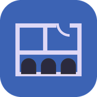
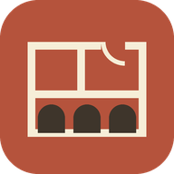

Trazo
¿Qué quieres hacer?

Obra nuevaViviendas de hoy: solar, sótanos, plantas, instalaciones, cimentación y estructura.

FincaSon Pons, la casa de Palma y edificios de época, con la finca y sus caminos.
Son dos apps separadas, cada una con sus proyectos. Los que ya tenías se han repartido solos: los de vivienda moderna en Obra nueva y el resto en Finca. Puedes instalar cada una en el móvil con su propio icono.